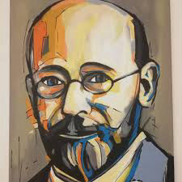

Janusz Korczak
Janusz Who?
Why is it that so few people in Australia have heard about Janusz Korczak, the man whose work and actions formed the basis of the Convention on the Rights of the Child? In so many countries around the world he is known as a social activist, educator, humanitarian, a doctor, a writer, a hero, a radio broadcaster too. Yes, he was all those. He was and is so highly valued and regarded, and his legacy is treasured, studied and integrated in daily practice in schools and communities internationally.
Even his tragic death in 1942 , that he could have avoided if he put himself above children is symbolic of what he believed and worked for. His work is timeless and equally important today in our complex world when everything is changing constantly.
He would not like to be regarded as a hero, though to many internationally, he is. He would not like or want to be regarded as that. He lived his life with these words of his in mind.” I exist not to be loved and admired, but to love and act. It is not the duty of those around me to love me. Rather, it is my duty to be concerned about the world, about man.” Janusz Korczak
From an early age he wanted to play with the children in the street and those experiences were significant in shaping his life and his intention to help children who weren't as fortunate as him. Much later he became a doctor, a pediatrician. He wrote books for children and about children and in a time when Jews were persecuted he became the director of an orphanage for Jewish children and worked in another orphanage in Warsaw too. To him all children were equal, respected and entitled to a home. He lived with the children and the children created the rules for their own homes, the orphanages, and he abided by the rules they set and if he, like any other person living in the orphanage did not, the children’s council would decide on the consequences and he would accept the decision made. People in universities and associations and around the world like to quote Korczak and his work and introduce it into systems today.
In many countries people who have made a difference are recognised. It could be by telling their life stories, celebrating their lives on a nominated day, dedicating a year to reinforce the significance and legacy of these people. And so it has been for Janusz Korczak.
“When UNESCO declared I979 “The Year of the Child” it also named it “The Year of Janusz Korczak to mark the Centenary of his birth. He has been compared to Mother Theresa, John Dewey, Martin Luther King and Socrates. Books have been written about his life and educational theories.
His own books have been published and republished in over twenty different languages, including Arabic and Japanese. (They are currently republishing all his educational works in Germany.) His work is studied at European universities and symposia are devoted to him. Films and plays have been produced about him. Schools, hospitals and streets have been named after him. Many monuments have been erected to honour him. He was posthumously given the German Peace Prize, Pope John Paul II said, that “for the world of today, Janusz Korczak is a symbol of true religion and true morality.” Yet he is hardly known in the English speaking world.”Sandra Joseph
“Korczak considered the child a full-fledged person since its birth. He promoted and in practice consistently implemented values and principles such as respect for the child-man and the whole of mankind, caring for the weaker, responsibility for oneself and for others, self-management, work as a value, social justice and perceiving the child as a partner. In his child-rearing approach, he was ahead of his time.” Marek Michalak